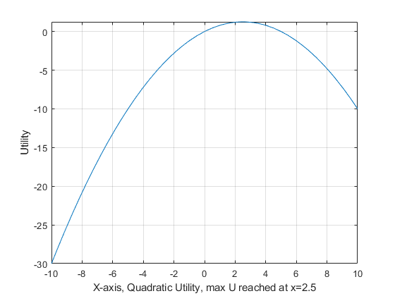

Chapter 1 Notations and Functions
1.1 Local and Global Maximum
Back to Intro Math for Econ, [Matlab Definition**
Global Maximum: Function \(f\) defined on domain \(X\) has a global maximum at \(x^* \in X\) if for all \(x\in X\), \(f(x)\le f(x^* )\)
Local Maximum: Function \(f\) defined on domain \(X\) has a local maximum at \(x^* \in X\) if there exists an open interval \(\left(a,b\right)\), such that \(x^* \in \left(a,b\right)\), and for all \(x\in \left(a,b\right)\), \(f(x)\le f(x^* )\)
Many functions do not have maximum
We have utility function, production function, and budget constraints in economic models.
When households make choices, they are picking the bundle of goods that gives them the highest level of utility.
Most of the production and utility functions that we use do not have local or global maximum.
For example, a cobb-douglas production function will produce ever higher output with more labor and capital input.
And a log utility function will give higher utility with higher levels of consumption.
Note: When we combine perference and budget together, like we did in our two goods model, we could think about the optimal bundle of choices that achieves the highest level of utility given fixed budget in a household maximization problem.
Quadratic Utility
A special utility function, quadratic utility, however, does have a single maximum.
\[U(x)=x-\alpha \cdot x^2\]
We can write down the equation using matlab’s symbolic package
% Parameter
a = 0.20;
% Create symbolic equation in matlab
syms x
f(x) = x - a*x^2f(x) =
\(\displaystyle x-\frac{x^2 }{5}\)
Matlab Analytical Global Maximum for Quadratic Utility
Matlab can find the \(x\) value that maximizes the function by:
diff function: taking the derivative of f with respect to \(x\)
solve function: finding where the derivative crosses \(0\)
% Solve
maxofx = solve(diff(f, x), x)maxofx =
\(\displaystyle \frac{5}{2}\)
% Convert symbolic to double precision
maxofx = double(maxofx)
maxofx = 2.5000We have found the global maximum for the function.
A household will try to consume exactly this optimal amount of good if their budget allows.
With quadratic utility over one good, even if the household can afford to buy more goods than the maximum amount, they will not.
This could be used to approximate consumption of say how much rice a consumer wants for example.
Matlab Graphical Solution
% Graph equation
close all;
figure();
% Create minimum x and maximum x point where to draw the graph
x_lower_bd = min(-10, maxofx-abs(maxofx)/2);
x_upper_bd = max(10, maxofx+abs(maxofx)/2);
% Draw the function
fplot(f, [x_lower_bd, x_upper_bd]);
% Label
xlabel(['X-axis, Quadratic Utility, max U reached at x=', num2str(maxofx)])
ylabel(['Utility'])
grid on